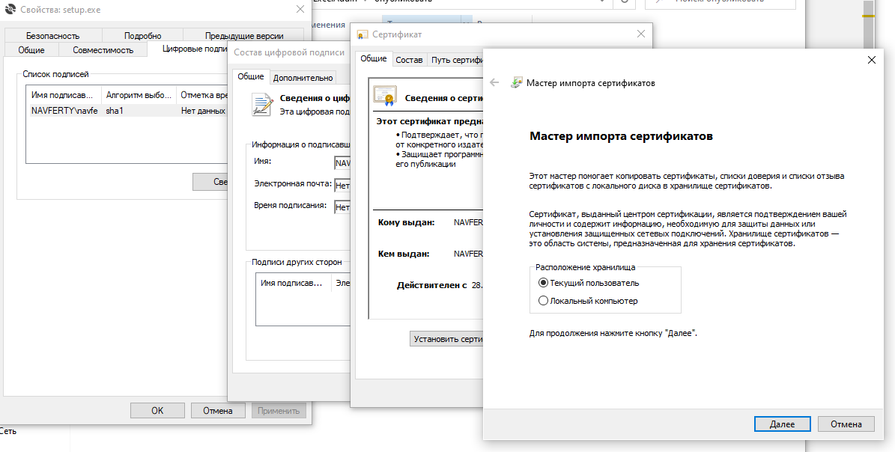

Установка и удаление
Скачайте и разархивируйте архив с установщиком
Получите последнюю версию с нашего сервера:
Скачать setup.zipЗапустите установку
Дважды щёлкните по загруженному файлу setup.exe и следуйте инструкциям мастера установки.
Перезапустите Excel
Если Excel был открыт во время установки, перезапустите его. Вы увидите новую вкладку Navferty's Tools на ленте.
Установка сертификата (если требуется)
Если возникает предупреждение о сертификате:
- Щёлкните правой кнопкой мыши по файлу
setup.exeи выберите Свойства - Перейдите на вкладку Цифровые подписи
- Выберите подпись и нажмите Сведения
- Нажмите Просмотреть сертификат → Установить сертификат
- Выберите Локальный компьютер и поместите его в Доверенные корневые центры сертификации

Сертификат можно удалить после установки, но он потребуется для будущих обновлений.
Офлайн-установка
Каждый релиз собирается в GitHub Actions, и полный набор установочных файлов прикреплён к нему:
- Откройте последний релиз
- Скачайте прикреплённый архив
NavfertyExcelAddIn-*.zip - Распакуйте файлы в папку и запустите файл
.vsto
Рекомендуется устанавливать из папки на рабочем столе: обновления разрешены только из той же папки, из которой надстройка была установлена впервые.
После установки перезапустите Excel. На ленте появится новая вкладка Navferty's Tools.
Удаление
Способ 1: Параметры Windows (рекомендуется)
- Откройте Параметры Windows (Win + I)
- Перейдите в Приложения → Установленные приложения (в Windows 10: Приложения и возможности)
- Найдите Navferty Excel Add-In в списке
- Нажмите Удалить и следуйте инструкциям
Способ 2: Панель управления
- Откройте Панель управления
- Перейдите в Программы → Программы и компоненты
- Щёлкните правой кнопкой мыши по Navferty Excel Add-In и выберите Удалить